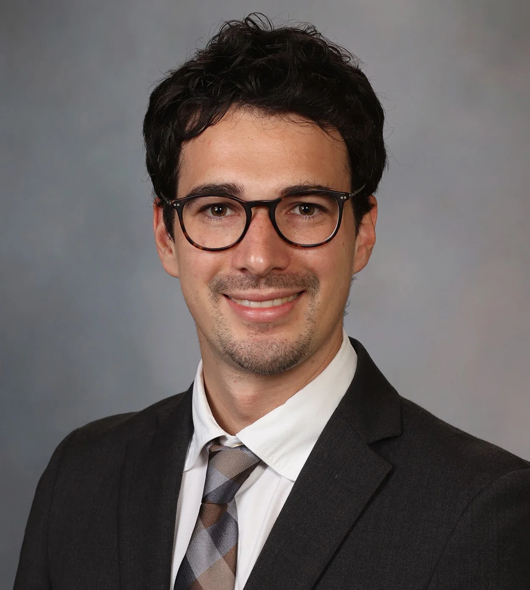

Formazione

Ho conseguito la maturità scientifica (100/100 e lode) e successivamente mi sono laureato in Medicina e Chirurgia all'Università di Padova (110/110, lode e menzione d'eccellenza), discutendo una tesi sulla prevenzione degli endoleak di tipo II durante il trattamento endovascolare degli aneurismi dell'aorta addominale.
Ho frequentato la Scuola di Specializzazione in Chirurgia Vascolare dell'Università di Padova, assumendo negli anni 2019-2020 il ruolo di Chief Resident, e l'anno successivo mi sono specializzato in Chirurgia Vascolare con il massimo dei voti, con una tesi sull'impatto dell'angolazione aortica sui risultati delle riparazioni endovascolari complesse con endoprotesi fenestrate e ramificate (FB-EVAR).
Ho completato la formazione con un anno di fellowship (Edward Rogers Vascular Surgery Clinical Research Fellowship) presso la prestigiosa Mayo Clinic di Rochester (Minnesota, USA), approfondendo la ricerca sulla patologia aortica e l'esperienza clinica nelle riparazioni endovascolari complesse dell'aorta addominale e toraco-addominale.
Dal 2022 al 2024 sono stato ricercatore all'Università di Padova e nel gennaio 2025 sono stato chiamato dalla stessa Università a ricoprire il ruolo di Professore Associato di Chirurgia Vascolare (il più giovane chirurgo vascolare in Italia).